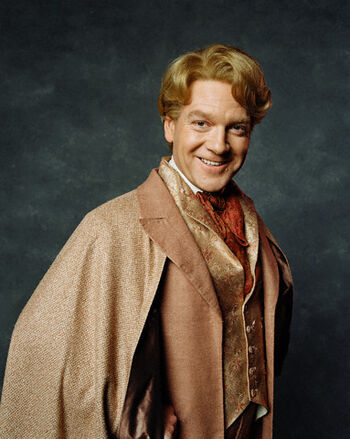

Notable Members
Rowena Ravenclaw
Was a Scottish witch and one of the four founders of Hogwarts School of Witchcraft and Wizardry.
She was noted for her intelligence and creativity.

Luna Lovegood
Was a witch and the only child and daughter of Xenophilius and Pandora Lovegood.
Luna attended Hogwarts School of Witchcraft and Wizardry from 1992-1999 and was sorted into Ravenclaw House.
In her fourth year, Luna joined Dumbledore's Army.

Gilderoy Lockhart
Was a half-blood wizard, a Ravenclaw student at Hogwarts School of Witchcraft and Wizardry, and later a famous wizarding celebrity who authored many books on dark creatures and his supposed encounters with them.